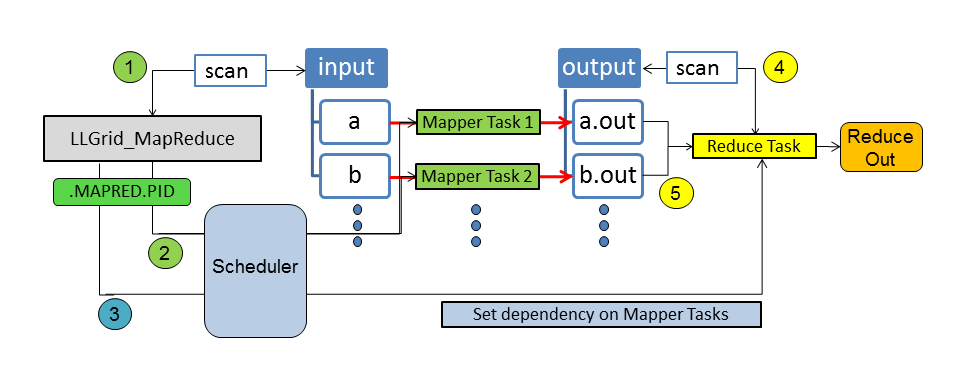
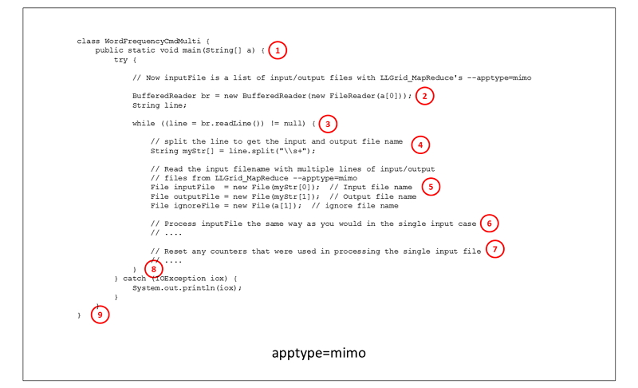
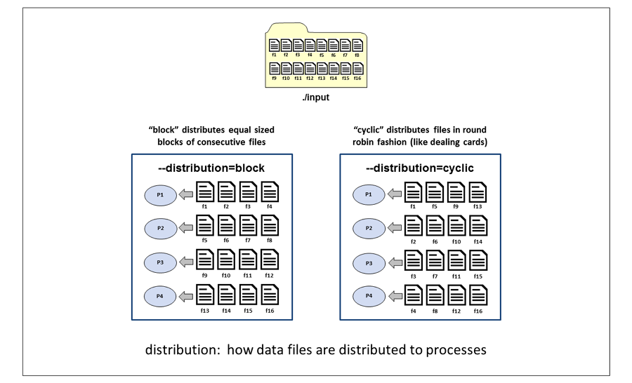
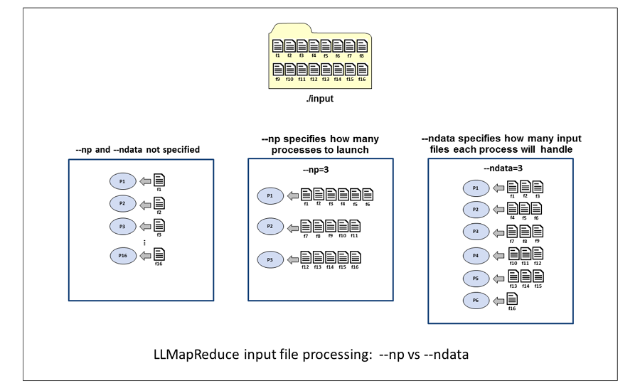

LLMapReduce
What is MapReduce
MapReduce is a programming model for processing large data sets with a parallel, distributed algorithm on a set of distributed networked computers. It became popular with the Java community when Hadoop implemented the map-reduce parallel program model for Java.
There are many workflows where multiple independent files are processed in one stage, followed by gathering the results and post-processing them in a second stage. This workflow is representative of "loosely coupled" processing, where the coupling comes from gathering the result files and is often handled using the MapReduce paradigm.
To ease the burden on researchers and to provide good performance for the MapReduce Use Case on a community shared production machine, the SuperCloud Team created LLMapReduce.
The LLMapReduce Command
The options included in the LLMapReduce API provide extensive flexibility. At its most basic, LLMapReduce executes a user script on all the files in a user supplied input directory. The results are saved to unique files in the output directory. If the user requires a 2nd phase to post-process the data, the user provided reducer script performs the gather task followed by the post-processing.
LLMapReduce is language agnostic, and we provide examples for MATLAB®, Java and Python. LLMapReduce supports nested LLMapReduce calls and we provide an example of this along with the other examples.
The LLMapReduce command scans the user-specified input directory and translates each individual file into a computing task for the user-specified application (noted as Mapper in the image below). Then, all of the computing tasks will be submitted to the SuperCloud systems for processing. If needed, the results can be post-processed by setting up a user-specified reduce task, which is dependent on the mapping task results. The reduce task will wait until all the results become available. 
Benefits of LLMapReduce
LLMapReduce can reduce startup cost (loading packages, setting up data if it's the same dataset, etc.) in two ways. First, say you need to train 160 models. You would normally have to wait for the first 16 GPUs to be available, and then as those complete, you'd have to wait for the next 16 to be available, etc., 10 times until you've trained all your models. LLMapReduce will allocate the 16 GPUs to you, train your first 16, and then train your next 16 within that same allocation. You've reduced the time your jobs are waiting to run by quite a bit, especially when the system is quite busy. This you get for free with LLMapReduce, you usually don't have to make any changes to your code at all, or some very minor changes.
Another way that LLMapReduce can reduce startup cost is by using mimo
(multiple input multiple output) mode, which we highly recommend. You
make a few changes to your code so that instead of training a single
model during each run, it will iterate through and train several (it
would train 10 models in sequence from the example above) models during
each run. In this case you only have to pay the startup cost of your
code once. Depending on how much time this takes, you can really save a
lot of time here. You can find an example of code modified to use mimo
mode in the description of the --apptype option below.
LLMapReduce Examples
We offer a few basic examples in the Examples section on this page. You can also find more examples on the Where to Find Examples page.
Usage
The most basic LLMapReduce requires 3 inputs:
- The name of the script to be run, specified using the
--mapperoption - The input file directory, specified using the
--inputoption - The output file directory, specified using the
--outputoption
You can display the full set of options by running LLMapReduce -h.
$ LLMapReduce
Usage: LLMapReduce [options]
Options:
--version show program's version number and exit
-h, --help show this help message and exit
--np=NPROCS Number of processes to run concurrently. Either N or
[Nnode,Nppn,Ntpp], where N (total number of
processes), Nnode (number of nodes), Nppn (number of
processes per node), Ntpp (number of threads per process,
1 is default). Without --ndata, all data will be evenly
distributed to the given number of processes.
--ndata=NDATAPERTASK Number of input data to be processed per task for fine
control, The default value is one. You may want to use
the --np option instead if you want to distribute the
entire work load to the given nProcs processes by the
--np option.
--distribution=DATADIST
Distribution rule for the data, block or cyclic.
Default is block.
--mapper=MYMAPPER Specify the mapper program to execute.
--input=INPATH Specify a path where the input files are or a file
containing the list of the input files.
--output=OUTDIRPATH Specify a directory path where the output files to be
saved.
--prefix=PREFIXFILENAME
Specify a string to be prefixed to output file name.
--subdir=USESUBDIR Specify true if data is located at sub-directories.
All the data under the input directory will be scanned
recursively. The same sub-directory structure will be
maintained under the output directory. Default is
false.
--ext=OUTEXTENSION Specify a file extension for the output. Default is
out. Use noext if no extension is preferred.
--extSearch=SEARCHEXTENSION
Specify a file extension when searching input files
with the --subdir option.
--delimeter=OUTDELIMETER
Specify a file extension delimeter for the output.
Default is the dot(.)
--exclusive=EXCLUSIVEMODE
Turn on the exclusive mode (true/false). The default
is false.
--reducer=MYREDUCER Specify the reducer program to execute.
--redargs=REDARGUMENTS
List of arguments to be passed to the reducer
[optional].
--redout=REDOUTFILENAME
Output filename for the reducer [optional].
--changeDepMode=DEPENDENCYMODE
Change the dependency mode. By default, the reduce job
starts only when all mapper tasks are completed
successfully. The alternative behavior
(--changeDepMode=true) lets the reduce job start when
the mapper job terminates regardless of its exit
status.
--keep=KEEPTEMPDIR Decide whether or not to keep the temporary
.MAPRED.PID dirctory (true/false). The default is
false.
--apptype=APPLICATIONTYPE
If your application can take multiple lines of input
and output format, set apptype=mimo. By default, your
application takes one line of input and output (siso).
--cpuType=CPUTYPE Request compute nodes with a specific CPU type
[optional].
--gpuNameCount=GPUNAMECOUNT
Specify the GPU name and number of counts to be used
for each task as GPU_NAME:COUNT. Currently each node
has 2 Volta (V100) units.
--slotsPerTask=SLOTSPERTASK
Specify the number of slots(cores) per task. Default
value is 1 [optional].
--slotsPerTaskType=SLOTSPERTASKTYPE
Specify how the number of slots(cores) per task be
applied. Default value is 1 [Map only], Other options
are 2 [Both Map and Reduce] and 3 [Reduce only].
--reservation=ADV_RES_NAME
Specify an advanced reservation name to which a job is
submitted (requires LLSC coordination).
--tempdir=TEMPDIR Specify a temporary directory which replaces the
default MAPRED.PID directory.
--partition=PARTNAME Specify a partition name where the job is submitted
to.
--options=SCHEDOPTIONS
If you want to add additional scheduler options,
define them with --options as a single string.`
If you need any other options:
please send your requirements to supercloud@mit.edu
Output logs
The location of the output logs from your LLMapReduce job depends on how the job was submitted:
- Triples mode: if you launched your LLMapReduce job using triples
mode (
--np=[Nnode,Nppn,Ntpp), the output logs will reside in the directoryMAPRED.<pid>/logswherepidis the process id number of theLLMapReduceprocess. The log files from the individual processes will reside in subdirectories in theMAPRED.<pid>/logsdirectory. These subdirectories will be calledp<start-pid>-p<end-pid>_<nodename>wherep<start-pid>-p<end-pid>is the range of process ids whose log files are contained in the subdirectory, and<nodename>is the name of the compute node that those processes ran on. - Regular (non-triples) mode: if you launched your LLMapReduce job
without using triples mode (
--np=N), the output logs will reside in the directoryMAPRED.<pid>/logswhere<pid>is the process id number of theLLMapReduceprocess. - With
--tempdiroption: if you launched your LLMapReduce job with--tempdir=<your-dir>where<your-dir>is a directory that you choose, the output logs will reside in the directory<your-dir>/logs.- If you launched without triples mode (
--np=N), the output logs will reside in<your-dir>/logs. - If you launched with triples mode (
--np=[Nnode,Nppn,Ntpp), the output logs will reside in subdirectories in<your-dir>/logsThese subdirectories will be calledp<start-pid>-p<end-pid>_<nodename>(see the Triples mode bullet above for an explanation of the name of the subdirectories)
- If you launched without triples mode (
To summarize:
- If you launched with triples mode, your log files will be in
MAPRED.<pid>/logs/p<start-pid>-p<end-pid>_<nodename>. - If you launched in regular (non-triples) mode, your log files will
be in
MAPRED.<pid>/logs. - If you specified the
-tempdiroption, replaceMAPREDwith the name of the directory you specified.
Environment Variables
If you use Triples Mode with the --np option
(--np=[Nnode,Nppn,Ntpp]) to specify the number of processes to run,
the following environment variables are available for your use.
LLMR_NODE_ID- the node number the process is running on: 0 <=LLMR_NODE_ID<NnodeLLMR_TASKS_PER_NODE- the number of tasks/processes per node,NppnLLMR_RANK- the process number: 0 <=LLMR_RANK<Nnode*NppnLLMR_RANK_MIN- the job's lowest process number running on a particular node;LLMR_NODE_ID*NppnLLMR_RANK_MAX- the job's highest process number running on a particular node; ((LLMR_NODE_ID+ 1) *Nppn) - 1LLMRID- a unique identifier for each process running on a particular node; 0 <=LLMRID<Nppn- 1LLMR_LOG_SUBDIR- the name of the subdirectory containing the output log files; this directory name includes the range of process ids and the name of the compute node on which the processes ranLLMR_LOG_DIR- pathname to the subdirectory containing the output log files
In the example below, the triple [2,48,1] was used:
LLMR_NODE_ID: 0 or 1LLMR_TASKS_PER_NODE: 48LLMR_RANK- 0 - 47 for
LLMR_NODE_ID=0 - 48 - 95 for
LLMR_NODE_ID=1
- 0 - 47 for
LLMR_RANK_MIN- 0 for
LLMR_NODE_ID=0 - 48 for
LLMR_NODE_ID=1
- 0 for
LLMR_RANK_MAX- 47 for
LLMR_NODE_ID=0 - 95 for
LLMR_NODE_ID=1
- 47 for
LLMRID: 0 - 47LLMR_LOG_SUBDIRp0-p47_c-15-4-1forLLMR_NODE_ID=0p48-p95_c-15-3-4forLLMR_NODE_ID=1
LLMR_LOG_DIR./MAPRED.20418/logs/p0-p47_c-15-4-1forLLMR_NODE_ID=0./MAPRED.20418/logs/p48-p95_c-15-3-4forLLMR_NODE_ID=1
See our page, How to Use Environment Variables, for information on using environment variables.
Options
--apptype=[APPLICATION-TYPE]
Specify the application type.
APPLICATION-TYPE is one of the following:
| APPLICATION-TYPE | Description |
|---|---|
| siso | single input, single output (default) |
| mimo | multiple input, multiple output |
By default, the LLMapReduce command invokes your application with just
one input filename and one output filename at a time. A single process
calls your application multiple times to process all of the input files
that are assigned to it. This is referred to as the single input, single
output (siso) model.
In the multiple input, multiple output (mimo) model, multiple temporary
files named input_<#> are automatically generated and written into
your temporary MAPRED directory. Each of these files contains a list of
filename pairs: an input data filename and its corresponding output
filename. Each of the launched processes will be given, as an argument,
the name of one of the input_<#> files. The number of these
input_<#> is determined by the value of the --np or --ndata
parameter that is used. See the Resource Limit
Enforcement page for
the default values for --np based on the cpu type.
The advantage of using the mimo model is that your application is called and loaded just once to process all of its assigned input files. For example, if you are running MATLAB® code, the overhead of starting and stopping MATLAB® for each input file can become significant if you are processing a lot of data files.
The --apptype=mimo option allows you to run your application in mimo
mode, to eliminate the unnecessary overhead of repeated starts and stops
of the application. The only caveat is that your application has to be
modified slightly to be able to read a file and process the multiple
lines of input output filename pairs in that file.
This change is easy to implement in high level programming languages such as MATLAB® and Python.
In your ~/examples/LLGrid_MapReduce/Java directory, there is an example
of an LLMapReduce job which uses the --apptype=mimo option. The Java
code for this example is in the src subdirectory, in
WordFrequenceCmdMulti.java. The code below shows the basic structure of
an application that uses the --apptype=mimo option. The details of
what the application does to count the words in the input file are left
out here, but it would be the same code that is used in the single
input, single output example.
Instead of receiving a single input filename and a single output
filename as arguments and processing just the single input file,
WordFrequencyCmdMulti.java reads input and output filename pairs from a
file and processes each input/output filename pair before exiting. To do
this, we need a while loop to read the file containing the input output
filename pairs, one line at a time, and then we process the input file
the same way as we did in the single input, single output version.

- The input parameter to the main function of the Word Frequency
Command Multi class is a string containing the name of a file which
contains a list of input and output filename pairs, and the name of
the reference words file. Without the
--apptype=mimooption, the input string would contain an input filename, an output filename, and the reference word filename. - We open the file that contains the input output filename pairs.
- The while loop will read one line at a time from the file.
- We parse the line that was just read from the file to get the input and output filenames.
- We open the input, output, and reference word files.
- Processing is done on the input file the same way it is done in the single input, single output model.
- When the word counting on the input file is done, we need to reset any counters or other temporary variables that were used in counting the words for a single input file.
- This is the end of the processing loop. Go back and get another input output filename pair from the file.
- The application can exit when all of the input output filename pairs have been processed.
--changeDepMode=[CHANGE-DEPENDENCY-MODE]
This option enables/disables the dependency mode, which controls whether the reduce job will start upon completion of the map job. By default, the launch of the reduce job is dependent upon successful exit status from the map job. Changing the dependency mode allows the reduce job to start regardless of the mapper exit status.
CHANGE-DEPENDENCY-MODE is one of the following:
| CHANGE-DEPENDENCY-MODE | Description |
|---|---|
| false | don't change the dependency mode for starting the reduce job (default) |
| true | change the dependency mode to allow the reduce job to start regardless of mapper exit status |
--cpuType=[CPU-TYPE]
Select the cpu type of the nodes that your application will run on. By
default, the LLMapReduce command launches your application to run on
the Xeon-P8 nodes.
CPU-TYPE is one of the following:
| CPU-TYPE | Description |
|---|---|
| xeon-p8 | Intel Xeon Platinum (default) |
| xeon-g6 | Intel Xeon Gold 6248 |
--delimeter=[OUTPUT-FILE-EXTENSION-DELIMITER]
Specify the file extension delimiter for the output files.
The --delimeter option allows you to specify the output file extension
delimiter. By default, the delimiter is the dot character ..
--distribution=[DISTRIBUTION-TYPE]
Specify how data is distributed to the processes.
DISTRIBUTION-TYPE is one of the following:
| DISTRIBUTION-TYPE | Description |
|---|---|
| block | block distribution (default) |
| cyclic | cyclic distribution |
This example illustrates how 16 input files are allocated to processes when the distribution rule is block, and when the distribution rule is cyclic.

Block distribution divides the input files into contiguous blocks of
files. If an ndata value is specified, each block will contain ndata
number of files. If an np value is specified, the size of the block
will be the total number of input files divided by the number processes.
In this example, with 16 input files and --np=4, each process gets 4
input files. Process P1 gets files f1, f2, f3, and f4. Process P2 gets
files f5, f6, f7, and f8, and so on.
Cyclic distribution distributes the input files in a round robin
fashion, similar to dealing a hand of cards. In this example with 16
input files and --np=4, each process gets 4 input files. Process P1
gets files f1, f5, f9 and f13. Process P2 gets files f2, f6, f10 and
f14, and so on.
When using the --distribution option, you must also provide either the
--np option or the --ndata option. Without the --np or --ndata
option, each process receives just 1 input file and the distribution
option would be meaningless.
--exclusive=[EXCLUSIVE-MODE]
Enable or disable exclusive use of a node.
This option is used to enable exclusive use of a node to avoid interference with other jobs. By default, exclusive mode is disabled. When you enable exclusive mode, your job might not be dispatched right away if there aren't enough empty nodes.
EXCLUSIVE-MODE is one of the following:
| EXCLUSIVE-MODE | Description |
|---|---|
| false | disable exclusive use of the node (default) |
| true | enable exclusive use of the node |
--ext=[FILE_EXTENSION]
Specify a file extension for the output files, or request no file extension on the output files
This option allows you to specify a file extension for the job's output
files. The default is out.
To specify that no file extension be used on the output files, use
--ext=noext.
--extSearch=SEARCH_EXTENSION
Specify a file extension for input file search by extension.
This option allows you to specify a file extension when searching
through subdirectories for input files. In order to use this option, you
must also set --subdir=true.
--gpuNameCount=[GPU-NAME:COUNT]
Specify the GPU name and number of GPUs units to be used for each task.
The COUNT value allows you to specify how many GPU units to use.
GPU-NAME is the following:
| GPU-NAME | Description | Valid COUNT values |
|---|---|---|
| volta | NVIDIA Volta V100 | 1 or 2 |
-h, --help
Display a list of the LLMapReduce command options and a brief
description of each, and then exit.
--input=[INPUT-PATH]
Specify the path to the input files.
The --input option is a required option and specifies the path where
the input files are located. The specified path may point to a directory
that contains all of the input files, or the path may point to the name
of a file that contains a list of input files.
--keep=[KEEP-TEMP-FILES]
Keep or remove temporary files upon job completion.
KEEP-TEMP-FILES is one of the following:
| KEEP-TEMP-FILES | Description |
|---|---|
| false | delete temporary files upon job completion (default) |
| true | keep temporary files upon job completion |
When you call the LLMapReduce command, many temporary files are
created in a temporary subdirectory, located in the directory where you
launched the LLMapReduce command. The name of this temporary
subdirectory is MAPRED.<number>, where <number> is the id of the
LLMapReduce process (which should not be confused with the job id that
is assigned by the scheduler).
The MAPRED directory contains scripts used to launch each process and output log files generated by your application. Whatever log output you would have seen when running your application in serial can be found in log files in the MAPRED directory. There will be one log file for each process.
When your job completes, the default action is for LLMapReduce to
delete the MAPRED directory and its contents. If you'd like to override
this action for debugging purposes, you can use the --keep=true
option. Once your code has been debugged and is in production mode, you
should avoid keeping these temporary files around because they use a lot
of disk space.
--mapper=[MAPPER-PROGRAM]
Specify the name of the mapper program.
This required option specifies the name of the mapper program that will be launched.The mapper program file must have execute permission. Use the following command to add execute permission to a file in your home directory:
$ chmod u+x <file>
If the mapper file resides in a group shared directory and other members of the group will launch LLMapReduce jobs using the mapper program, the file will also need group execute permission. Use the following command to add execute permission to a file in a group shared directory:
$ chmod ug+x <file>
--ndata=[NUM-INPUT-FILES-PER-PROCESS]
Specify the number of input files handled per process.
The --ndata option allows you to specify the maximum number of input
files to be handled by each process. The default value is 1, resulting
in 1 input file per process. However, if the --np option is used
without the ‑‑ndata option, the input files will be evenly distributed
to the processes.
The --ndata option is useful in cases where an application might crash
due to bugs or bad data. In this case, you might want to have fewer data
files assigned to each process, in case the process terminates early and
can't process all of the input files that were assigned to it. This
would minimize the number of unprocessed files in your job submission.
--np=[NUM-PROCESSES]
Specify the number of processes to launch.
The ‑‑np option allows you to specify the number of processes that
will be launched to run your application. You can specify just the total
number of processes you want to use and allow the scheduler to determine
how to distribute the processes among the nodes, or you can use Triples
Mode to specify how you would like the processes to
be distributed across the nodes.
To specify the number of processes to launch, use one of the following
‑‑np option formats:
- Let the scheduler distribute the processes:
‑‑np=N, whereN= total number of processes. -
Use Triples Mode to specify how the processes will be distributed:
‑‑np=[Nnode,Nppn,Ntpp], where:Nnode= number of nodesNppn= number of processes per nodeNtpp= number of threads per process (default is 1)
Entries are comma-separated, should be enclosed in brackets
[], and there should not be any spaces separating the entries.You can find additional information on triples mode job launches (including tips on how to tune your triples for best performance) on the Triples Mode page.
Without also using the --ndata option, all data will be evenly
distributed to the given number of processes.
The input files will be evenly distributed to the processes. By default, the number of processes to launch is set to your default allotment (see the Resource Enforcement page for the default allotments based on cpu type).
--np is not a required option. If you don't specify the number of
processes, the number of processes that will be launched to run your
application is equal to the default number of processes that you are
allocated for the requested CPU type (see the Resource
Limits page for the
default allocations by CPU type).
If you specify a number of processes that is greater than the number that you're allotted by default, the extra processes will be queued, waiting for your other processes to finish. After a process terminates, one of the queued processes will be launched.
We strongly recommend using the default setting or a value that is less than the default setting. Setting the number of processes to a value higher than your default allotment results in a great deal of overhead for the scheduler.
The ‑‑np and ‑‑ndata options are mutually exclusive. If both options
are used together, the np value will be ignored and the number of
processes launched will be the number of input files divided by the
--ndata value.
This example illustrates how 16 input files are allocated to processes
in 3 different scenarios: when not using the --np and --ndata
options; when using --np=3; and when using --ndata=3.

When neither option is specified, the number of processes launched is the same as the number of input files, resulting in one input file per process.
With --np=3, the scheduler launches 3 processes and distributes the 16
input files evenly among the 3 processes. When the number of input files
is not evenly divisible by the number of processes, the lower numbered
processes handle the leftover input files. In this example, the single
leftover input file is handled by process 1.
With --ndata=3, 6 processes will be launched. The number of processes
is the smallest integer value greater than, or equal to the number of
input files divided by the ndata value. If the number of input files
is not evenly divisible by the ndata value, the highest numbered
process handles the leftover input files.
--options=[SCHEDULER-OPTIONS]
Specify additional scheduler options.
This option is used to pass additional option(s) to the Slurm scheduler. The additional scheduler option(s) string should be enclosed within single or double quotes. Please refer to the Scheduler Commands page and the specific Slurm Documentation pages for information on additional scheduler options.
--output=[OUTPUT-PATH]
Specify the path to the output files.
The --output option is a required option and specifies the path where
the output files should be written.
--partition=[PARTITION-NAME]
Specify the name of the partition to submit the job to. The default partition name is determined by the cpu type that is selected.
| CPU-TYPE | PARTITION-NAME |
|---|---|
| xeon-p8 | xeon-p8 (default) |
| xeon-g6 | xeon-g6-volta |
--prefix=[PREFIX-TEXT]
Specify a text string to pre-pend to the output file names.
This option specifies the name of the reducer program that will be launched when all of the mapper jobs have completed.
--redargs=[REDUCER-ARGS]
Specify a list of arguments for the reducer.
This option allows you to pass arguments to your reducer script. The parameters list is a single string and should be enclosed within a set of double quotes.
--redout=[REDUCER-OUTPUT-FILE-NAME]
Specify the name of the reducer output file.
This option specifies the reducer output filename. The default output
filename is llmapreduce.out. If a path is not specified in
REDUCER-OUTPUT-FILE-NAME, the reducer output file will be written to the
current working directory.
--reducer=[REDUCER-PROGRAM]
Specify the name of the reducer program.
This option specifies the name of the reducer program that will be launched when all of the mapper jobs have completed. The reducer program file must have execute permission. Use the following command to add execute permission to a file in your home directory:
$ chmod u+x <file>
If the reducer file resides in a group shared directory and other members of the group will launch LLMapReduce jobs using the reducer program, the file will also need group execute permission. Use the following command to add execute permission to a file in a group shared directory:
$ chmod ug+x <file>
--reservation=[ADVANCED_RESERVATION_NAME]
Specify the name of the advanced reservation for the job.
An advanced reservation is useful if you have a demo scheduled and would like to ensure that there will be resources available for your job at the time of your demo.
This option requires that an advanced reservation be created by the SuperCloud team before the job is submitted.
--slotsPerTask=[NUM-SLOTS]
Specify the number of slots used by each task.
This option specifies the number of slots (cores) used by each task. The default value is 1. If your jobs require more than the per-slot memory limit (see table below) you may need to request additional slots for your jobs so that they can run to completion. Please note that requesting additional slots for your job will reduce the number of tasks that you can run simultaneously. For example, if you require 2 slots per task and your allotment of cores is 256, you will be able to run only 128 tasks simultaneously.
| NodeNode | Per-Slot memory Limit (GB) |
|---|---|
| Intel Xeon P8 | 4 |
| Intel Xeon G6 | 9 |
--slotsPerTaskType=[SLOTS-PER-TASK-TYPE]
Specify which stage (map or reduce) of the LLMapReduce job the number of slots assigned per task should be applied.
| SLOTS-PER-TASK-TYPE Value | When slotsPerTask value is applied |
|---|---|
| 1 | During Mapper stage only |
| 2 | During Mapper and Reducer stages |
| 3 | During Reducer stage only |
--subdir=[SEARCH-SUBDIRS]
Enable or disable recursive search of the input directory.
If your input files reside in a multi-level directory structure, the
--subdir=true option will enable recursive searching of the specified
input directory. All files in the subdirectories will be treated as
input files. By default, this capability is disabled.
SEARCH-SUBDIRS is one of the following:
| SEARCH-SUBDIRS | Description |
|---|---|
| false | disable recursive searching of the input directory (default) |
| true | enable recursive searching of the input directory |
--tempdir=[TEMPDIR]
Specify the name of the temporary directory to generate (instead of
MAPRED.PID).
Examples
To use LLMapReduce to launch a parameter sweep, follow these steps:
- Modify your code to accept input parameters
- Create a mapper script to launch your code
- Create a text file with the desired sets of parameters
- Submit to the scheduler using the LLMapReduce command
In this example, we will run python code in the file mnist_cnn.py,
which expects 3 input parameters: batch, epochs and rate.
The following is an example of how we would run the python code with 1 set of input parameters:
$ python mnist_cnn.py --batch=64 --epochs=1 --rate=0.001
Here is the mapper script, drv_keras.sh, that will be used to launch
the python code. Note that $1 $2 $3 is used to represent the 3 input
parameters being passed to the python code.
Here are the contents of an example parameters file, param_sweep.txt,
which is passed in as the LLMapReduce input file:
--batch=64 --epochs=1000 --rate=0.001
--batch=128 --epochs=500 --rate=0.002
--batch=256 --epochs=200 --rate=0.003
--batch=512 --epochs=1100 --rate=0.004
Here is the LLMapReduce command to submit the job to the scheduler, for running on a single Volta GPU:
LLMapReduce --mapper=./drv_keras.sh --gpuNameCount=volta:1 --input=param_sweep.txt --output=results --keep=true
Additional LLMapReduce examples can be found in these locations:
- In the user's SuperCloud home directory:
~/examples/LLGrid_MapReduce - In the
/usr/local/examplesdirectory on SuperCloud system nodes. This directory contains the latest version of the examples. - The
/home/gridsan/groups/bwedx/teaching-examplesdirectory contains a number of examples, including a few for LLMapReduce. - The
/home/gridsan/groups/bwedx/Practical_HPC_2022/LLMapReducedirectory contains a number of examples you try out for yourself, solutions are in thesolutionssubdirectory.- There is a walkthrough of some of these examples in the Practical HPC Course.